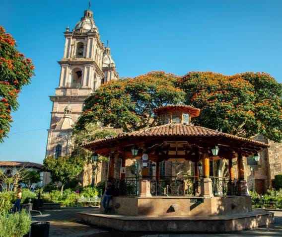
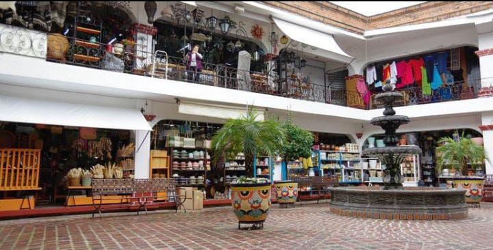
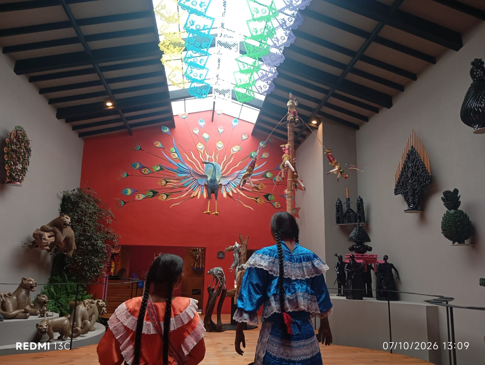

El kiosco se encuentra en el Jardín Central, también conocido como la plaza principal del centro histórico de Valle de Bravo, Estado de México, está rodeado de calles tradicionales, comercios, restaurantes y edificios representativos del municipio.
El kiosco destaca por su arquitectura tradicional y por encontrarse en el centro de un espacio público utilizado para descansar, caminar y reunirse, su presencia forma parte de la imagen característica de la plaza.
El kiosco es uno de los puntos más reconocibles de Valle de Bravo y sirve como referencia para comenzar un recorrido por el centro. Desde allí se pueden visitar los portales, la parroquia y otros sitios tradicionales. Además, el jardín permite observar la vida cotidiana de la comunidad y disfrutar de un ambiente que combina historia, cultura y convivencia.

El Mercado de Artesanías se encuentra sobre la avenida Benito Juárez, en la zona de San Antonio, en Valle de Bravo, Estado de México, es un lugar visitado por turistas y habitantes que buscan productos elaborados por artesanos de la región.
Fue construido en 1984 con el propósito de fomentar, proteger y difundir el trabajo artesanal de los habitantes de Valle de Bravo, desde entonces se ha convertido en un espacio importante para conservar las tradiciones y dar a conocer las habilidades de los artesanos locales, en este mercado se pueden encontrar piezas de cerámica, barro, hierro forjado, tejidos, bordados, deshilados y objetos elaborados con fibras naturales.

El Museo de Arte Popular de Valle de Bravo se encuentra en la calle Miguel Hidalgo número 208, en el centro del municipio, su ubicación permite combinar la visita con un recorrido por las calles y otros sitios culturales de la localidad.
El museo tiene como objetivo conservar, exhibir y difundir el arte popular de México, busca que los visitantes conozcan el valor de las creaciones artesanales y comprendan su importancia como parte del patrimonio cultural del país.

Valle de Bravo, Estado de México, es un municipio que destaca por su belleza natural, su arquitectura tradicional y su riqueza cultural, entre sus lugares representativos se encuentran el Mercado de Artesanías, el Museo de Arte Popular y el Kiosco del Jardín Central, tres espacios que permiten conocer diferentes aspectos de la historia, las costumbres y la vida cotidiana de la comunidad.
Es un espacio donde los visitantes pueden encontrar productos elaborados a mano, como piezas de barro, tejidos, bordados y objetos decorativos. Estos trabajos muestran la creatividad de los artesanos y ayudan a conservar técnicas tradicionales que se transmiten de generación en generación.
Los tres sitios contribuyen a fortalecer la identidad cultural de Valle de Bravo, mientras el mercado promueve el trabajo artesanal, el museo ayuda a preservar el patrimonio artístico y el kiosco representa un espacio de encuentro y convivencia, en conjunto permiten apreciar la riqueza cultural del municipio y conocer mejor sus tradiciones.
Visitar estos tres lugares permite disfrutar de diferentes experiencias en un mismo recorrido: comprar artesanías, descubrir expresiones del arte popular y descansar en una plaza tradicional, por eso, son una excelente opción para conocer la cultura y el ambiente característico de Valle de Bravo.